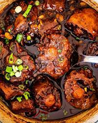

Oxtail Stew

Description
This ingredient isn’t incredibly popular in North America, but it
should be! They’re quite literally just cattle tails cut into small
pieces. You’ll typically see oxtails braised low and slow. With this
cooking preparation, they become incredibly tender, very similar to
short ribs.
Ingredients
- Olive Oil
- Oxtails
- Salt & Pepper
- Onion
- Green Onion
- Garlic & Ginger
- Tomato Paste
- Habanero (optional)
- Seasonings (Allspice,smoked paprika, thyme, bay leaves)
- Soy sauce
- Beef Broth
- Lima Beans
- Cornstarch
Steps
- Sear the oxtails: Heat the olive oil in a large
braiser or dutch
oven over medium-high heat. Season the oxtails with salt and
pepper, and sear them on all sides until browned. You may need
to do this in batches. Transfer the oxtails to a plate and set
the oxtails aside.
- Sauté: Add the onion to the pot and cook until
translucent and
softened, 3-5 minutes. Add the garlic, ginger and habanero, then
stir and cook for 1 minute. Stir in the allspice, smoked
paprika, soy sauce, tomato paste, and cook for 2-3 minutes until
the paste browns slightly.
- Braise: Add the oxtails back to the pot. Stir
in the beef broth,
thyme, bay leaves and bring the pot to a boil. Turn the heat to
low and cover with a lid slightly cracked. Simmer for 2 hours,
remove the lid and stir in the butter beans, then simmer for
another 30-45 minutes uncovered.
- Finish: Remove the bay leaves and thyme sprigs. Whisk the
cornstarch with 1 tbsp water to create a slurry. Stir the slurry
into the pot and increase the heat to medium, stirring until the
mixture thickens. Garnish with freshly chopped green onion.
Return to Homepage